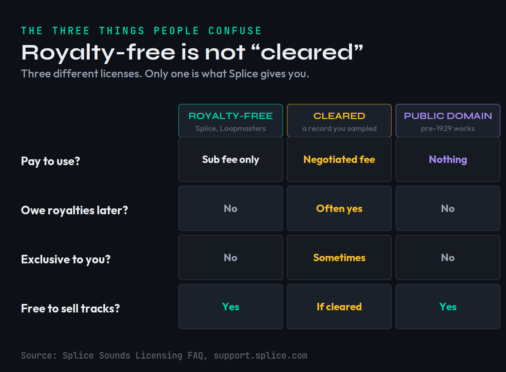
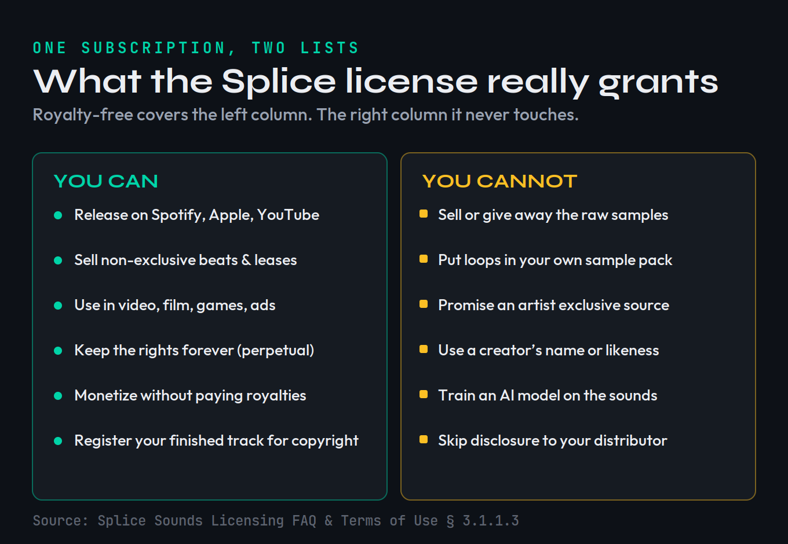
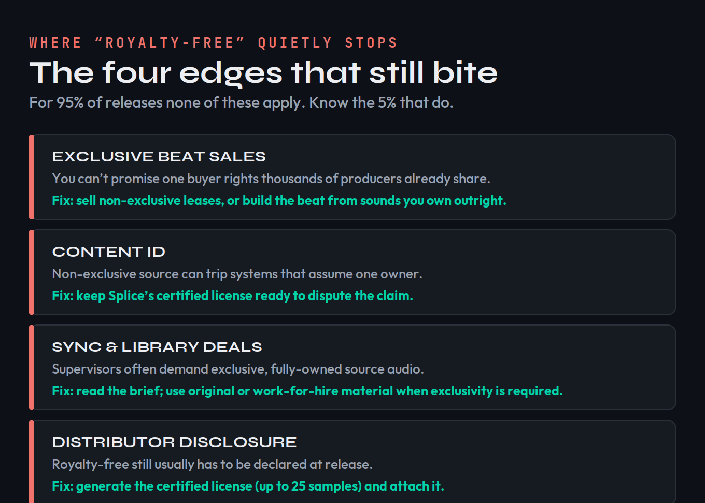

Ask this question in any production forum and you’ll get two answers shouting over each other. Splice’s own marketing says 100% royalty-free! A forum reply three posts down says actually you’ll get sued. Both are wrong in the ways that matter. The honest answer is short and then immediately interesting: yes, Splice samples are royalty-free — and that phrase does less work than almost everyone thinks it does. This page gives you the yes in one sentence, then maps the exact four places where royalty-free quietly stops protecting you, so you can release, sell, and license with the confidence that the marketing promises but never actually explains.
Every sound you download from Splice Sounds is royalty-free, perpetual, and cleared for commercial use — you owe nothing beyond your subscription, and no credit to Splice or the original creator. The catch isn’t royalties. It’s exclusivity. Four situations — exclusive beat sales, YouTube Content ID, sync & library deals, and distributor disclosure — are where the word breaks down. For roughly 95% of releases, none of them apply.
The short answer, in full
When you download a loop, one-shot, or preset from Splice Sounds while your subscription is active, Splice grants you a royalty-free license to use that sound in your own music and creative work. Per Splice’s own Sounds Licensing FAQ, that means you can incorporate it into commercial or non-commercial productions “without needing to pay royalties or credit Splice or the original creator.” The license is also perpetual: the sounds you downloaded stay licensed to you even after you cancel or pause your subscription. You don’t lose your back catalogue when you stop paying — you only lose the ability to download new sounds.
It helps to be precise about what the subscription actually buys, because this is where a lot of anxiety comes from. You are not renting the sounds. You are paying for access to download, and the license attaches to each sound at the moment you download it. Once a sound is in your library, your right to use it in finished work is locked in and perpetual — cancelling later removes your ability to download new sounds, not your right to keep using the ones you already pulled. That’s why you can build a track today, cancel next month, and still release that track years later with no further obligation. The subscription is the door; the license is what you carry through it.
So if your worry is the simple one — will I owe somebody money if my track using a Splice loop blows up? — the answer is no. You will not get a bill from Splice, the sound’s creator, or anyone in that chain because your song did well. That part of the folklore is dead. What the folklore gets right, in a garbled way, is that “royalty-free” is not a magic word that means “cleared for absolutely anything.” It answers exactly one question — do you owe ongoing royalties? — and stays silent on a different question that trips up producers who try to do something more ambitious than release their own tracks: do you own the sound exclusively? You don’t. That single gap is the source of every real-world problem below.
It’s worth killing the most persistent forum myth head-on, because it scares producers away from sounds they’ve already paid for: the belief that Splice can “come after you,” revoke your rights, or claw back a percentage if a track takes off. Nothing in the license works that way. There is no success clause, no streaming threshold, no dormant royalty that wakes up at a certain play count. Your obligation is the flat subscription you already pay, and it ends there. The genuine risks on this page are never about money owed to Splice — they’re about exclusivity you might accidentally promise to a third party. Hold those two ideas apart and most of the anxiety around the word “royalty-free” simply evaporates.
What “royalty-free” actually means (and what it doesn’t)
The phrase is one of the most misread terms in music. “Royalty-free” does not mean free of cost, free of copyright, or free of restriction. It means one specific thing: after you obtain the license, you do not pay recurring royalties each time the work is used or sold. That’s it. With Splice, the “obtaining” is your subscription; the “no recurring royalties” is the promise that holds for the life of your finished track.
It helps to put royalty-free next to the two things people confuse it with. Copyright-cleared material is something you got specific permission to use — like chopping a section of an existing record after negotiating with the rights holders. That permission is often exclusive-ish, narrow, and expensive, and it’s the whole painful process of clearing a sample that royalty-free libraries exist to help you avoid. Public domain material has no copyright at all because it has expired or been waived; anyone can use it for anything, but you also have no exclusive claim to it. Splice sits in none of these buckets cleanly: you have a real, paid, royalty-free license, you fully own the finished recording you make, but you do not own the underlying sounds exclusively, and you cannot release your work into the public domain because the sounds inside it aren’t yours to give away.
A worked example makes the distinction concrete. Say you and a producer in another city both subscribe to Splice, and you both download the same atmospheric piano loop on the same afternoon. You each build a completely different song around it; you release yours to streaming, they sell theirs as a beat lease. Both of you are fully within your rights, owe nothing, and neither of you has wronged the other — that’s non-exclusive royalty-free working exactly as designed. Now change one detail: you promise a client that the piano in your track is exclusively theirs and will never appear anywhere else. The moment you make that promise you’ve broken something — not because the loop cost money, but because you sold an exclusivity you were never granted. Same loop, same license; the problem appeared only when someone in the chain expected ownership the license doesn’t convey.

Splice is explicit on this point in its FAQ: a public-domain license like CC0 is “not appropriate for non-exclusive, royalty-free sounds,” because while you own your new recording, you do not own exclusive rights to the actual sounds. Hold that distinction in your head — you own your song; you license the sounds inside it — and the rest of this page is just the practical consequences. If you want the broader picture of how ownership and payouts flow once a track is live, our guide to how music royalties work covers the publishing and master sides that sit on top of all this.
What the Splice license does let you do
The permissions are genuinely broad, and worth stating plainly because the cautious folklore makes people under-use what they’ve paid for. You can release music built with Splice sounds commercially — through a label, on every streaming platform, monetized on YouTube, sold as downloads. Splice names “distributing your New Recording via a record label” and “uploading a Creative Work… for purposes of monetization” as explicit examples of permitted commercial use. You own the finished recording and the composition. You can register that finished work for copyright. And you keep all of this permanently, subscription or not.

The license isn’t limited to music, either. Splice permits use in “various other projects including video games, film, television, radio, live performances, and vlogs,” whether the sound sits inside a full production or is used in isolation as a sound effect. It places no special restriction on synchronization uses — pairing your music to picture — though, as we’ll see, the third party commissioning that sync may add their own requirements. Crucially for beatmakers: Splice does not stop you from distributing your finished instrumentals on other platforms “as non-exclusive, royalty-free music.” You can absolutely sell beats online built with Splice loops. If you’re setting prices, our breakdown of how to price your beats and the lease tiers in beat licensing explained both assume exactly this kind of non-exclusive catalogue. The single word that governs whether a beat sale is safe is in that sentence — non-exclusive — and it’s the hinge of the next two sections.
What the license does not let you do
Now the limits, because they’re where producers actually get into trouble — not from releasing tracks, but from trying to resell or over-promise the sounds. Splice’s FAQ lists the prohibitions directly. You may not sublicense sounds in isolation as sound effects, loops, or as source material for any other sample — even if you modify the original. You may not use the sounds in a way that competes with Splice, the textbook example being “redistributing them in new sample packs.” And you may not use the name, image, or likeness of a creator associated with a sound without their express written permission.
Translate that out of legalese. The bright line is: the sounds have to live inside a finished musical work. A track, a beat, a score cue, a sound-design bed for a game — fine. A folder of loops you hand off, sell, or bundle — not fine. If you make a sample pack of your own and a Splice one-shot is sitting in it as a usable sample, you’ve crossed the line, no matter how much you chopped or pitched it. The same applies to preset banks and any “construction kit” you’d sell to other producers. If you genuinely want to build and sell packs, that’s a real business — just build them from material you recorded or fully own, the way the producers in our guide to making your first sample pack do.
Two specifics catch people out. First, modification doesn’t launder a sample. Pitching a vocal chop down an octave, reversing it, time-stretching it, or burying it under three other sounds does not turn a Splice sound into something “yours” to redistribute — the FAQ explicitly extends the no-resale rule to source material “even if you modify the original.” The test is never how much you changed it; it’s whether you’re selling the sound as a sound. Second, the likeness rule is easy to trip over in marketing. If a loop is credited to a named artist, you cannot bill your release as “featuring” that artist, use their name in your title, or imply their endorsement — you licensed their sound, not their identity. Use the audio freely; leave the name alone unless you hold written permission.
One more limit that’s newly important: Splice prohibits using its content as training or modeling data for AI. Its FAQ states that use of downloaded sounds is “limited to the creation of New Recordings and Creative Works, neither of which include AI training data.” Splice also requires the people who supply its catalogue not to upload samples generated from pre-existing songs, which is what keeps the library clean at the source. If you’re working anywhere near generative tools, the line between “using a sound in a track” and “feeding a sound to a model” matters — we cover the wider legal terrain in is AI music legal.
The 4 places royalty-free still bites
Here is the part no marketing page and almost no forum thread maps cleanly. Every real problem with Splice samples traces back to one fact: your license is non-exclusive. The same loop you used is sitting in thousands of other producers’ sessions, legally. For most releases that’s irrelevant — nobody is harmed by sharing a loop. But in four specific situations, someone in the chain assumes exclusivity, and that assumption collides with a license that can never provide it.

1. Exclusive beat sales
This is the most common trap, and the most expensive. When you sell a beat as an exclusive, the buyer is paying a premium for one thing above all: that nobody else can use it. But Splice is clear that when you sell a work containing its sounds, the rights to those sounds are “sublicensed, not sold” — you’re passing along a license you don’t exclusively hold, to source content that thousands of others also licensed. You literally cannot deliver exclusivity on the source. Sell the beat as a non-exclusive lease and everything is clean. Sell it as exclusive and you’ve promised something the license forbids. Fix: keep Splice-built beats in your non-exclusive lease tier, and reserve true exclusives for beats made entirely from sounds you recorded or own outright.
The cost of getting this wrong is real. Picture an exclusive beat sold for several hundred or a few thousand dollars, on a contract promising the buyer the instrumental is theirs alone. If the lead melody came from a Splice loop, you’ve signed a promise you can’t keep — and the buyer could later find the same loop running under a dozen other songs, a breach that can mean a refund, a takedown, or lasting damage to your name. None of that can happen if you simply route Splice-built beats into your non-exclusive lease tiers and keep your exclusive catalogue built from sounds you own end to end.
2. Content ID and automated monetization
Because the same sample appears across many tracks, YouTube’s Content ID and similar fingerprinting systems can occasionally match your upload to someone else’s and throw a claim — not because you did anything wrong, but because the system assumes one owner per sound. Splice is refreshingly honest here: it “can’t guarantee that your tracks won’t get flagged,” but says its certified license “will be all you need to show proof that you can use the sample legally, dispute the claim, and get your music out.” So a flag isn’t a disaster — it’s a dispute you’re equipped to win. Fix: generate your certified license before release and keep it on hand; if a claim appears, dispute it with the document attached.
3. Sync and library deals
Sync placements — music in TV, film, ads, games — and the production libraries that broker them frequently require exclusive, fully-owned source content. A supervisor or library that demands you own every element of a cue cannot accept material built on non-exclusive Splice loops, no matter how royalty-free those loops are. Splice itself flags this: services “may require exclusive rights to all source content (such as individual samples), which is not possible with samples from Splice Sounds.” Splice doesn’t restrict sync, but the third party can. Fix: read each deal’s requirements; when a brief demands exclusivity, compose that cue from original or work-for-hire material. Our guide to music licensing explains how sync and library terms are structured.
4. Distributor disclosure
This one bites quietly because it feels like it shouldn’t exist: even though Splice samples are royalty-free, most distributors still require you to disclose that you used licensed third-party material. Royalty-free is not disclosure-free. Splice anticipates this and provides the document that satisfies it. Fix: generate the certified license and attach it when you submit your release. The mechanics live in the next section, and the broader release workflow is in how to distribute music.
How to release safely (a short checklist)
None of the four edges is hard to handle once you know it exists. The entire safe-release routine for Splice-built music comes down to three habits, and they take minutes.
Generate the certified license. Inside Splice, open Your Sounds, select the samples you used (up to 25 per document), and choose “Generate certified license.” Enter your legal name and the artist or producer name you’re releasing under, and Splice produces a PDF naming the sounds and confirming your license. That single document does double duty: it’s your disclosure proof for distributors and your dispute evidence for Content ID. Keep it with the project file.
Disclose, don’t hide. When your distributor asks whether you used third-party material, say yes and attach the certified license. Disclosure is not an admission of a problem; it’s the routine paperwork that keeps your release from being pulled later. The same is true when you register with a PRO like ASCAP or BMI — you disclose that samples were used, but you do not credit Splice or the creator as co-owners, because they aren’t.
In practice the disclosure step is small. Most major distributors surface it as a single checkbox or short field during upload, asking whether your release contains samples or third-party content; you tick yes and, if prompted, name the source or upload the certified license. It doesn’t slow your release, change your royalty split, or flag your track for manual review — it simply puts on record that, if a question ever arises, your paperwork already exists. Skipping it to “keep things simple” is the move that actually creates risk, because an undisclosed sample discovered after the fact is exactly what gets a release pulled.
Combine, don’t isolate. Make sure every Splice sound is part of a finished musical work, not sitting exposed as a sellable loop. You can even build a track around a single unedited loop and stay fully covered — Splice confirms a soloed sample is still licensed as long as it’s part of your recording. The danger is never how prominent the sample is; it’s whether you’re distributing the sample versus the song. Do those three things and the “am I safe?” question is permanently answered for ordinary releases.
How Splice compares to other royalty-free libraries
The licensing logic above isn’t unique to Splice — it’s roughly how every reputable subscription or pack-based royalty-free library works, including Loopmasters, which underpins a large share of the sample-pack market. The non-exclusive, finished-work-only, no-reselling structure is the industry norm precisely because it’s the only way a library can license the same sound to many producers at once. Where libraries differ is in the details: subscription versus one-time purchase, whether stems and MIDI are included, catalogue size and genre depth, and the exact wording around derivative works. We compare two of the biggest head-to-head in Splice vs Loopmasters, and survey the field in our roundup of the best sample libraries and the best sample packs worth buying.
The practical takeaway: the four edges in this guide travel with you across services. If you switch from Splice to another royalty-free library tomorrow, you’ll be living under the same exclusivity ceiling — great for releasing your own music and selling non-exclusive beats, a poor fit for exclusive sales and exclusivity-demanding sync. Pick a library for its sounds and pricing; manage the legal edges the same way regardless of whose loops you load.
When you do need to clear a sample instead
It’s worth ending on the bright line between the two worlds, because confusing them is the single most expensive mistake in sampling. Royalty-free libraries like Splice exist so you don’t have to clear anything — the clearance was handled upstream, the sounds are original, and your only obligations are the modest ones above. That is the entire point of paying for the library.
Sample clearance is the opposite situation: you’ve taken a piece of someone else’s existing recording — a drum break, a vocal, a melodic phrase from a released song — and you need permission from the owners of both the master and the composition before you can release it. There is no subscription that covers this; it’s a negotiation, often a costly and slow one, and skipping it is what actually gets tracks pulled and lawsuits filed. If you’re ever unsure which world you’re in, ask one question: did this sound come from a library that licensed it to me, or from a record someone else made? Library sound → you’re royalty-free, follow this page. Someone else’s record → you need to read how to clear a sample before you do anything else. Keep those two doors clearly marked and you’ll never walk through the wrong one.
Before you release: 3 checks
Run these before you upload or sell anything built with Splice sounds. Each takes a few minutes and catches the mistakes that are painful to undo after a track is live.
- Open Your Sounds in Splice and select every sample you used in the track (up to 25 per document).
- Click “Generate certified license,” enter your legal name and release artist name, and save the PDF with your project.
- Treat that file as standard release paperwork — it’s both your distributor disclosure and your Content ID dispute proof in one.
- List the beats or tracks you plan to sell, and tag each one: built with Splice sounds, or built only from sounds you own outright.
- Mark every Splice-built item as non-exclusive only — safe to lease, never to sell as an exclusive.
- Reserve your “own-everything” tracks for any exclusive sale, sync pitch, or library submission that demands exclusivity.
- Take one release-ready track and walk it through each edge: is anyone being promised exclusivity? Is it going to a sync or library deal? Is disclosure handled?
- Confirm no Splice sound is exposed as a sellable loop — every sample must live inside the finished work, not in a pack or stem bundle you’re distributing.
- Check the AI line: nothing you’re doing feeds Splice audio into model training, and nothing in the catalogue you used was derived from a pre-existing song.
Frequently Asked Questions
Yes. Every sound you download from Splice Sounds carries a royalty-free, perpetual, non-exclusive license. You can use it in commercial work without paying royalties or crediting Splice or the original creator — and you keep those rights even after you cancel your subscription. The only money you owe is the subscription itself while you download.
Yes, with one important limit. You can sell the finished beat or instrumental as non-exclusive, royalty-free music. What you cannot do is sell the raw Splice loops or one-shots as samples, or promise a buyer exclusive rights to the source sounds — because that source is licensed non-exclusively to thousands of other producers too. Non-exclusive leases are fine; true exclusive sales are the trap.
No. The license does not require you to credit Splice or the individual sound creator for the royalty obligation. In fact you must not use a creator’s name, image, or likeness in your track or its promotion without their written permission. Separately, most distributors and PROs still ask you to disclose that third-party samples were used — that is disclosure, not credit.
Yes. Releasing to streaming platforms is exactly what the commercial license covers. The one thing to prepare for is YouTube Content ID: because the same sample appears in many tracks, automated systems can occasionally flag it. Splice does not guarantee you won’t be flagged, but its certified license is the proof you need to dispute and clear the claim quickly.
Usually, yes. Royalty-free does not mean disclosure-free. Most distributors require you to declare any licensed third-party material, even when no royalties are owed. Splice solves this with a certified license PDF: open Your Sounds, select up to 25 samples, and generate the document to attach at release.
Yes. Splice licenses are non-exclusive by design, so any number of producers can use the same loop in their own tracks without infringing on one another. That is also exactly why you can’t sell anyone exclusive rights to a Splice sample — you never had them to give.
No. The license specifically bars redistributing Splice sounds as samples or loops — in isolation, in a new sample pack, in a preset bank, or as source material for another sample, even if you modify them. The sounds have to live inside a finished musical work. Selling them as raw content competes with Splice and breaks the license.
Not in every context. Royalty-free means no royalties are owed; it does not mean the sounds are exclusively yours or cleared for deals that demand exclusive, fully-owned source audio — some sync and library submissions do. For ordinary releases and non-exclusive beat sales you are fully covered. For exclusive deals, you need original or work-for-hire material instead.
This article is general information, not legal advice; Splice can revise its Terms of Use, so confirm the current language in Splice’s Sounds Licensing FAQ for your situation. License terms verified against Splice’s official help center on June 19, 2026.